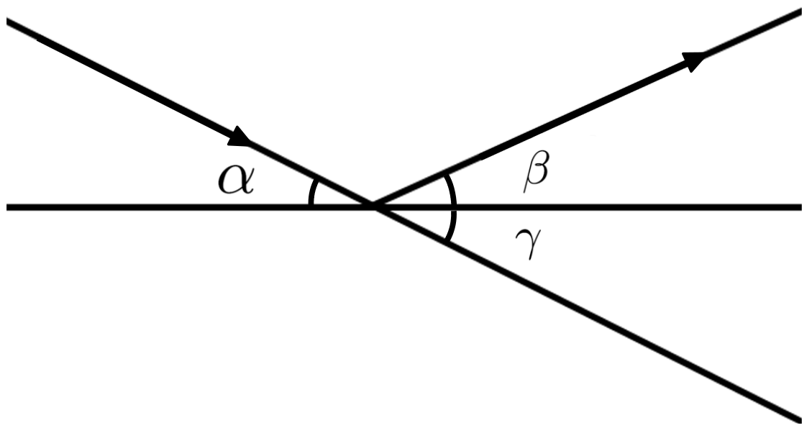
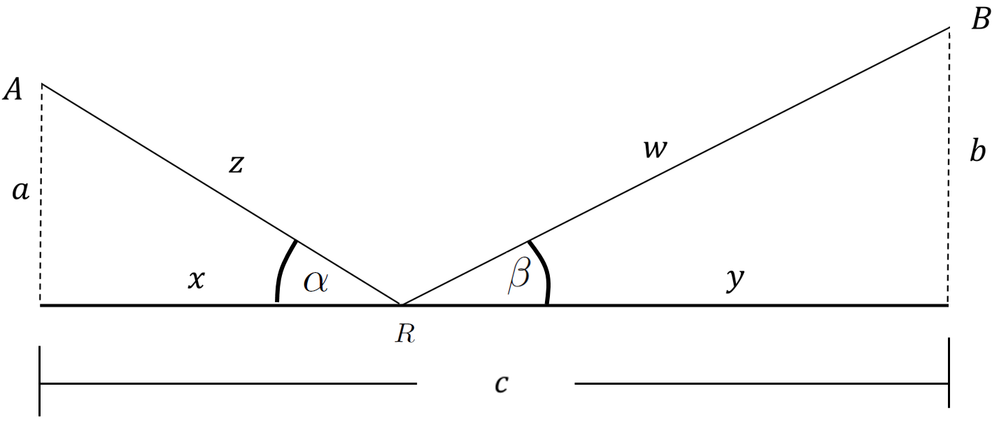
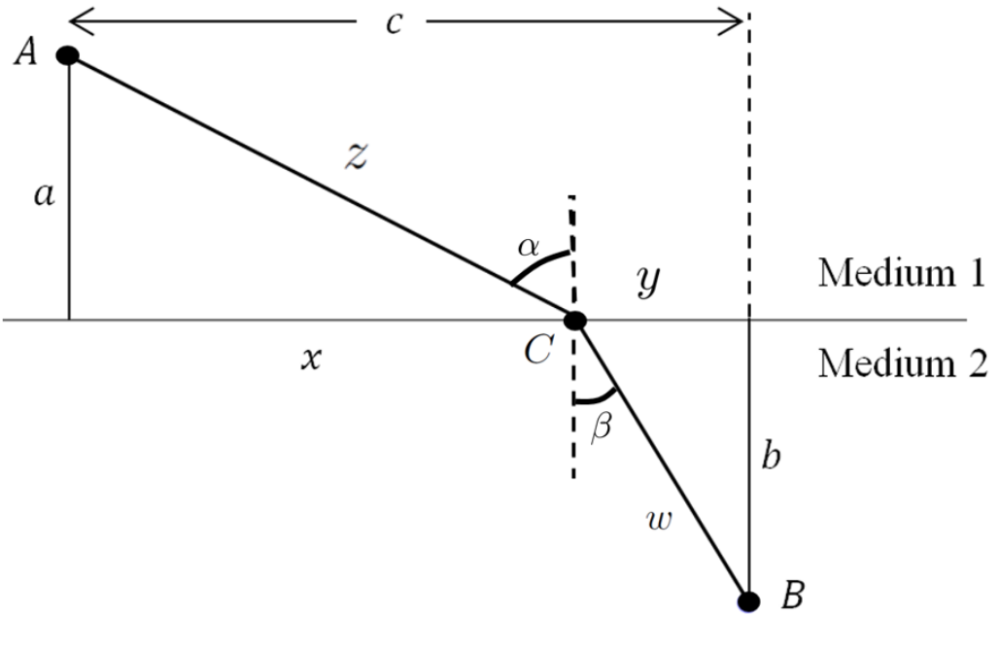
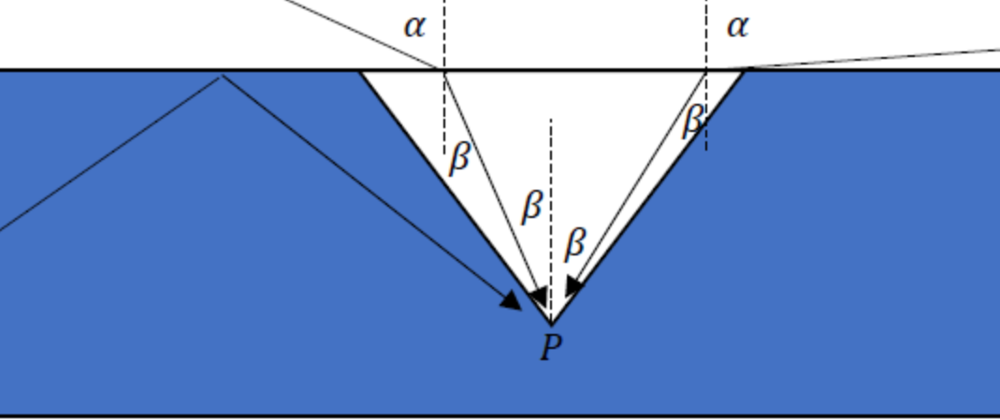
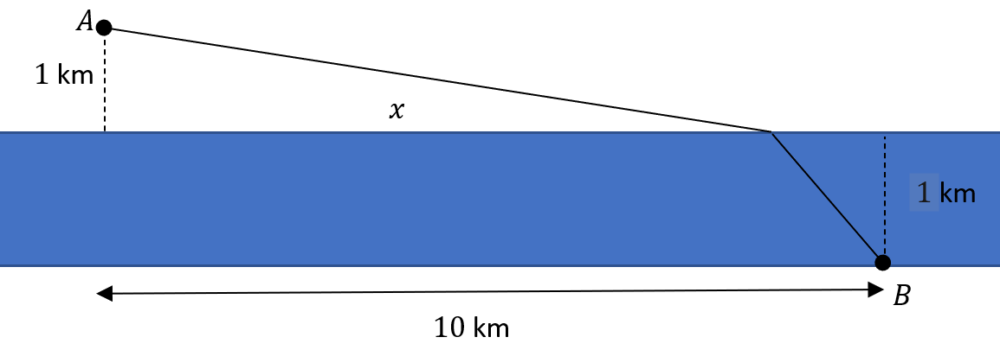
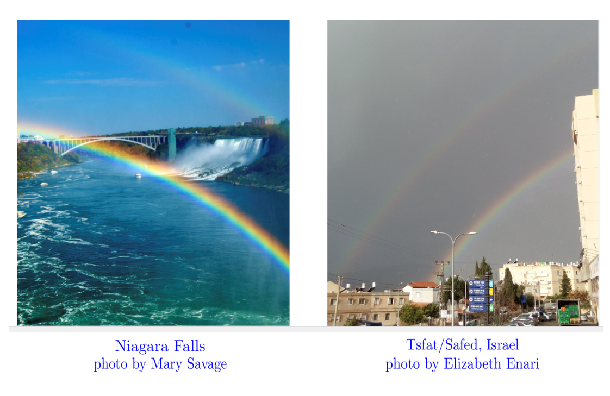
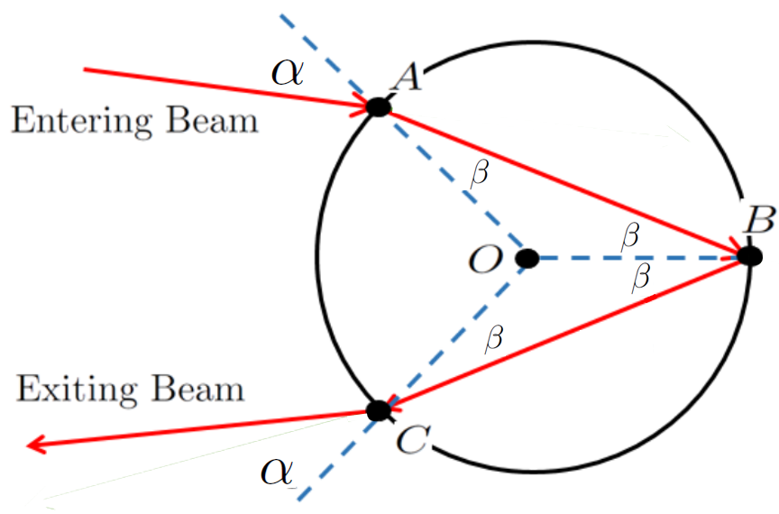
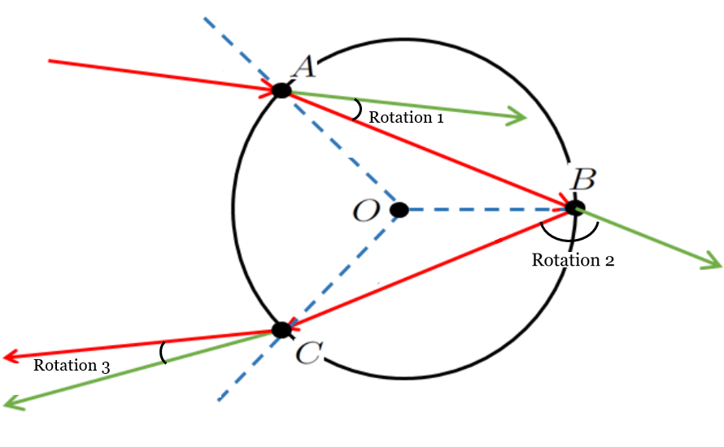
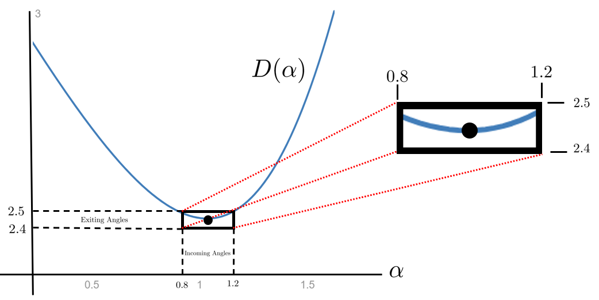
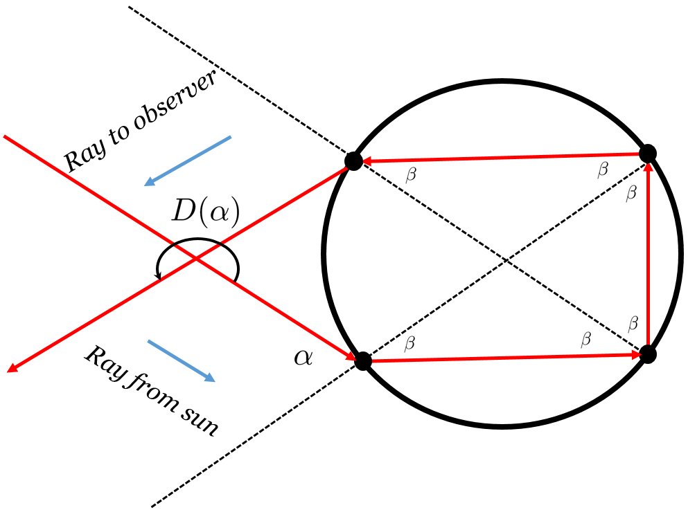

Because they are called Optimization Problems it is natural to assume that such problems are always about finding the maximum or minimum value of something. Certainly many of them are, but not all. Optimization problems come in two flavors:
Another example of this second type is problem Drill3.3.0.1. Recall that we showed that light bounces off of a mirror in such a manner that the angle of incidence equals the angle of reflection. We did this by reasoning geometrically from the figure below to show that the minimal path must satisfy the condition \(\alpha=\gamma\text{.}\)

The geometric argument was actually pretty easy to understand once we found the right trick. But thats the difficulty. The geometric argument required the very counter-intuitive trick of pretending that the light passed through the mirror instead of reflecting off of it! Calculus provides a more systematic approach, one that does not require a stroke-of-genius level of insight to solve each new problem. Lets re-solve this problem, this time using the Calculus tools weve learned.
We will need an objective function so we modify the sketch above to suit the needs of Calculus. In particular, the relevant quantities need names as shown below.

We assume that \(a\) (the height of the light source), \(b\) (the height of the observers eye), and \(c\) (the distance between the light source and the observer) are constants while \(x, y, z\text{,}\) and \(w\) are variables.
We wish to show that when the path of the light from \(A\) to \(R\) to \(B\) is shortest, then \(\alpha=\beta\text{.}\) Since the length of that path is \(z+w\) a natural objective function is:
Now suppose that the path from \(A\) to \(R\) to \(B\) is the shortest possible path, i.e., suppose that \(L\) is minimal. Then by Fermats Theorem we know that \(\dfdx{L}{x}=0\text{,}\) and therefore
Since \(\frac{x}{z}=\cos(\alpha)\) and \(\frac{y}{w}=\cos(\beta)\) we see that \(\alpha=\beta\text{.}\)
This Calculus based argument is not as elegant as the geometric argument we used in Chapter3. In the geometric argument we could easily visualize what was happening. Our Calculus based argument wasnt at all visual and it involved a lot of computation. But, believe it or not, this is a strength not a weakness. None of the computations are particularly hard, just tedious and detailed. But -- and this is the point -- we also had a clearly defined procedure to follow. We needed to: (1) Compute \(\dfdx{L}{x}\text{,}\) and (2) set \(\dfdx{L}{x}\) equal to zero. The rest was Algebra which is straightforward though not necessarily easy.
Drill9.3.1.1.
In the figure above suppose that \(a=5\text{,}\)\(b=3\text{,}\) and \(c=10\text{.}\)
(a)
Show that \(\dfdx{L}{x}=\frac{x}{\sqrt{25+x^2}}-\frac{10-x}{\sqrt{9+(10-x)^2}}\text{.}\)
(b)
Show that the solution of \(\dfdx{L}{x}=0\) is \(x=\frac{25}{4}\text{.}\)
(c)
Use the result of part (b) to show that \(\alpha=\beta\text{.}\)
Subsection9.3.2Refraction: Snells Law
We began the derivation of Snells Law in Section3.7, using the following sketch and assuming that the velocity of light in Medium 1 is \(v_1\text{,}\) and the velocity of light in Medium 2 is \(v_2\text{.}\)

In Drill3.7.0.2 we found that the time for a ray of light to travel from point \(A\) to point \(B\) is given by
But we stopped there with the comment that, although Fermat successfully proved Snells Law by minimizing \(T(x)\) using his Method of Adequality, it is very very difficult to do. We said we would return to the problem when we could use the rules of Calculus. The time to do that has arrived.
Notice that we have an optimization problem. The objective function we need to minimize is \(T(x)\text{.}\) There are several constraints. For example, \(x+y=c\) is one. Another is \(a^2+x^2=z^2\text{.}\) There is at least one more.
It is tempting to compute \(\dfdx{T}{x}\) and proceed to solve \(\dfdx{T}{x}=0\) as weve done before. Computing \(\dfdx{T}{x}\) is a bit challenging but it can be done if you proceed carefully.
The real issue is solving \(\dfdx{T}{x}=0\) for \(x\text{.}\) Unfortunately, this is still rather difficult to accomplish. But fortunately we we are not really interested in the value of \(x\) when \(T(x)\) is minimal. We want to show that the tie traveled along the path from \(A\) to \(C\) to \(B\) is minimal when \(\frac{\sin(\alpha)}{v_1}=\frac{\sin(\beta)}{v_2}\text{.}\) Well proceed carefully.
Drill9.3.2.1.
(a)
We know that the total time traveled from point \(A\) to \(C\) to \(B\) is given by
Write down all of the constraints involving the variables \(x\text{,}\)\(y\text{,}\)\(z\text{,}\) and \(w\text{,}\) and the constants \(a\text{,}\)\(b\text{,}\) and \(c\text{.}\) (Well ignore \(\alpha\) and \(\beta\) for now.)
(b)
Show that when \(T\) is minimum (that is, when \(\dfdx{T}{x}=0\)) we have
Use equation(9.17) to derive Snells Law of refraction: \(\frac{\sin(\alpha)}{v_1}= \frac{\sin(\beta)}{v_2}\text{.}\)
(d)
Assuming that the speed of light in water is about \(3/4\) of the speed of light in air, use Snells Law to determine the range of possible angles for \(\beta\) as \(\alpha\) ranges from \(0\) to \(\pi/2\text{.}\)

Physically, what Part9.3.2.1.d says is that when you are beneath the surface of a pond and look upward the entire view of the world above the surface is compressed into a circle at the top of a cone with central angle \(\beta\text{.}\) Attempts to look beyond that angle will result in you seeing a (probably dark) reflection from the bottom of the pond as no light that enters from above and outside this circle will reach your eye at point \(P\text{.}\) This phenomenon is called Snells Window and is illustrated in the image below.
The solution to the following problem will rely on a derivation similar to the one we used to prove Snells Law.
Drill9.3.2.3.
Suppose that the cost to run a fiber optic cable underwater is \(k\) (\(k\ge1\)) times the cost to run it on land. We wish to run a fiber optic cable from point \(A\)\(1\) km from the river, to point \(B\) on the other side \(10\) km downstream. The river is \(1\) km wide.

(a)
Show that the value of \(x\) necessary to minimize the cost of running the cable must satisfy the equation
When the formulas were working with get this complicated it is a good idea to check them against our intuition in simple cases. Does this formula make sense to you when \(k=1\text{?}\)
(c)
Use any appropriate technology, or Newtons Method, to provide approximate values for \(x\) in the following table
\(k\)
\(x\)
\(1.1\)
\(1.2\)
\(1.3\)
\(1.4\)
\(1.5\)
Do these values surprise you? Explain.
Subsection9.3.3Rainbows
Look carefully at the double rainbow in the pictures below and notice that the order of the colors is reversed from the primary (brighter) to the secondary rainbow? Why do you think this happens?

A few other questions come readily to mind. What conditions are required for a rainbow to form? Why is red on the top of the primary rainbow but at the bottom of the secondary? Why is the primary rainbow below the secondary one? Why is the primary rainbow brighter and why are double rainbows so rare?
To tackle these questions the first thing well need to do is build a mathematical model of the problem. As you will see developing the model is probably the most challenging part.
When a ray of light enters a raindrop it gets both refracted and reflected, so we will need to use all that we have learned about how light refracts and reflects. Clearly Snells Law will play a prominent role. To keep things simple we assume the drop is spherical.

By the Principle of Local Linearity when light strikes a point on a curved surface it will refract (if the surface is transparent) or reflect (if the surface is reflective) as if the surface is actually the line tangent to the surface. Since were assuming for simplicity that our raindrops are spherical this means that the light will reflect or refract as if it is striking the tangent line of the circle in the diagram at the point where the light enters the droplet, \(A\text{,}\) exits the droplet, \(C\text{,}\) or reflects inside of the droplet, \(B\text{.}\) All of the angles in the diagram at the right are measured between the light beam (in red) and the extended radii (blue, dashed lines) at points \(A\text{,}\)\(B\text{,}\) and \(C\text{.}\)
As displayed in the diagram above, the light ray traveling at velocity \(v_1\text{,}\) entering the raindrop at \(A\) and making an angle of \(\alpha\) radians with the radial line \(OA\) is refracted to an angle of radian measure \(\beta\) according to Snells Law:
where \(v_2\) is the velocity of light inside the raindrop. It is helpful to think of this refraction as a rotation about the point \(A\text{.}\) This is Rotation 1 in the diagram below. The reflection at point \(B\) and the refraction at point \(C\) can similarly be thought of as rotations about their respective points.

Actually, only a portion of the light is refracted. The rest is reflected off the exterior of the raindrop, and is no longer of concern to us. Once inside the raindrop, it reflects off of the back of the raindrop (again only a portion is reflected) so that the angle of incidence equals the angle of reflection. A portion of the light then exits the raindrop, and once again the angles are governed by Snells Law.
The total amount of (clockwise) rotation in this process is called the deviation angle, denoted \(D(\alpha)\text{.}\) This is shown in the sketch above.
Drill9.3.3.1.
Show that \(D(\alpha)=\pi-4\beta+2\alpha\text{.}\)
Remember that the angles \(\alpha\) and \(\beta\) are not independent. They are related by Snells Law which we will rewrite as
where \(k=\frac{v_1}{v_2}\) is called index of refraction (for water). In the case of white light, this index of refraction is about \(\frac43\) (This is an average. \(k\) actually varies with the frequency (color) of the light.). Graphing \(D(\alpha)\) for \(k=\frac43\) and \(0\le\alpha\le\frac{\pi}{2}\) gives the graph below.

From this graph it appears that the minimum of the curve is approximately at the point \((1.03,2.41)\text{.}\) So the minimum value of \(D(\alpha)\) is about \(2.41 \text{ radians }\approx138^\circ\) and it occurs when the angle at which the light enters the raindrop is \(\alpha\approx1.03 \text{ radians }\approx59.4^\circ\text{.}\) Notice (from the enlargement of the graph near that minimum) that because the graph of \(D(\alpha)\) is nearly horizontal (This is Fermats Theorem coming into play again.) for values of \(\alpha\) near \(1.03\) the amount of deviation is roughly the same for those values of \(\alpha\text{.}\)
This is pertinent because it means that the lower the deviation angle the more concentrated that light rays exiting the raindrop. So the light rays entering the raindrop at approximately \(59^\circ\) have the highest concentration when exiting the raindrop. At other values of \(\alpha\) the light is more diffused. It is these concentrated light rays that we see as a rainbow.
The angle supplementary to \(D(\alpha)\) is called the rainbow angle, denoted \(R(\alpha)\text{.}\) Thus
The rainbow angle is also the angle that the rainbow makes with the eye of an observer, relative to the angle of the sun. For white light we have a rainbow angle of
So you will see a rainbow when the air is filled with water droplets, for example immediately after a rain, and the sun is behind you. Relative to the suns rays the angle from your eye to the top of the rainbow will be about \(42^\circ\text{.}\) Every droplet reflects and refracts each ray of light entering it. The aggregation of all of those rays is the rainbow.
Of course, rainbows will manifest under other circumstances too, but we have not analyzed those.
Subsection9.3.4The Colors of the Rainbow
The color spread in a rainbow occurs because the index of refraction \(k\text{,}\) changes with the frequency (color) of the light. This can be seen by shining a beam of light through a triangular prism or, by listening to rock music from the 1970s.
Of course we can only do so much by reasoning from graphs and pictures. If we want to nail things down very precisely (we do), we will eventually need to look at the problem analytically by minimizing an objective function. Fortunately, we already have our objective function. It is \(D(\alpha)\text{.}\) Our constraint comes from Snells Law, \(\sin(\alpha)=k\sin(\beta)\text{.}\) We said that the general parameter \(k\) would depend on the frequency of the light and weve observed that for water and air \(k=\frac43\text{.}\) Rather than graphing the function for different values of \(k\) well just leave it as an arbitrary constant while we calculate. Afterward we can substitute specific values as needed.
Drill9.3.4.1.
Differentiate the objective function, \(D(\alpha)\text{,}\) and the constraint, equation(9.18), and use Fermats Theorem9.1.0.1 to show that when \(D\) is a minimum
Normally to solve such a system, we would use one of the equations to eliminate one of the variables in the other equation. We could do that here but it would require some very messy expressions involving inverse trigonometric functions. Instead there is a trick that will be cleaner.
Suppose we square the quantities in each equation and then add the resulting equations together. This gives
You might want to file this trick away in your memory. When Trigonometry is involved it is a good idea to look for, or to create, sums of the squares of sines and cosines.
Drill9.3.4.2.
(a)
Use equation(9.20) to show that for a given index of refraction \(k\text{,}\)\(D(\alpha)\) is minimized when \(\sin(\beta)=\sqrt{\frac{4-k^2}{3k^2}}\) and \(\sin(\alpha)=\sqrt{\frac{4-k^2}{3}}\text{.}\)
(b)
Use the result in part9.3.4.2.a to complete the following table:
Color
\(k\)
\(\beta{}\) (in degrees)
\(\alpha \) (in degrees)
\(D(\alpha) \) (in degrees)
\(R(\alpha) \) (in degrees)
Red
1.331
Orange
1.332
Yellow
1.333
Green
1.335
Blue
1.337
Indigo
1.340
Violet
1.344
(c)
How does the table in part9.3.4.2.b explain the order of the colors in the primary rainbow?
The values of \(R(\alpha)\) you obtained in the table account for the various color bands that appear in the rainbow as sunlight hits droplets at various angles.
Subsection9.3.5Double Rainbows
In a double rainbow the primary rainbow is created from light entering the upper portion of the droplet and exiting from the bottom. If light is bright enough then a secondary rainbow is created from light entering the lower portion and exiting the upper portion of the droplet as in the diagram below.

For the secondary rainbow the deviation angle \(D(\alpha)\) is the total amount of counterclockwise rotation and the rainbow angle would be \(R(\alpha)=D(\alpha)-\pi\text{.}\) Note that the extra reflection explains why the secondary rainbow is not as bright as the primary.
Drill9.3.5.1.
(a)
Show that in the case of the secondary rainbow, \(D(\alpha)=2\pi+2\alpha-6\beta\text{.}\) This is our objective function for the secondary rainbow.
(b)
Show that \(D(\alpha)\) is minimized when \(\sin(\beta)=\sqrt{\frac{9-k^2}{8k^2}}\) and \(\sin(\alpha)=\sqrt{\frac{9-k^2}{8}}\text{.}\)
Use the table in part9.3.5.1.c of this problem and the table in part9.3.4.2.b of Drill9.3.4.2 to explain why the secondary rainbow is above the primary rainbow and its colors are reversed.